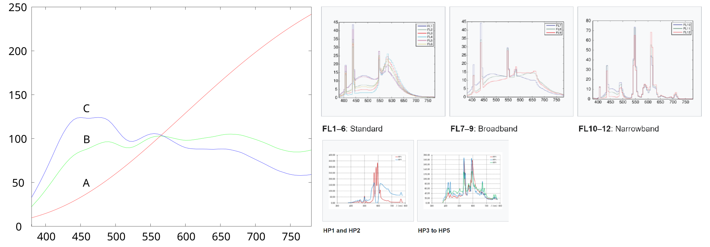
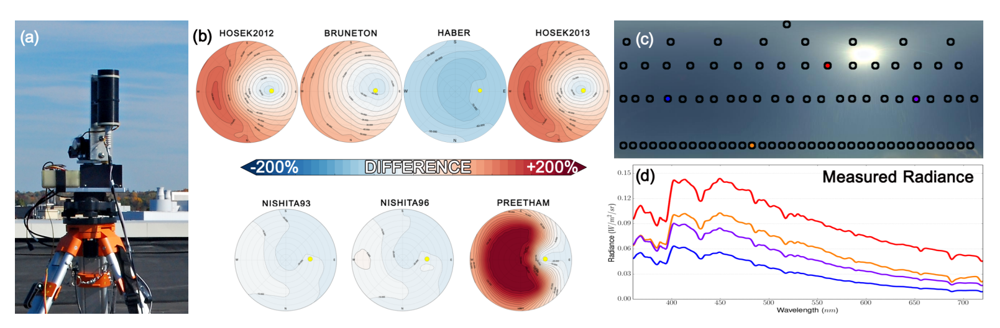
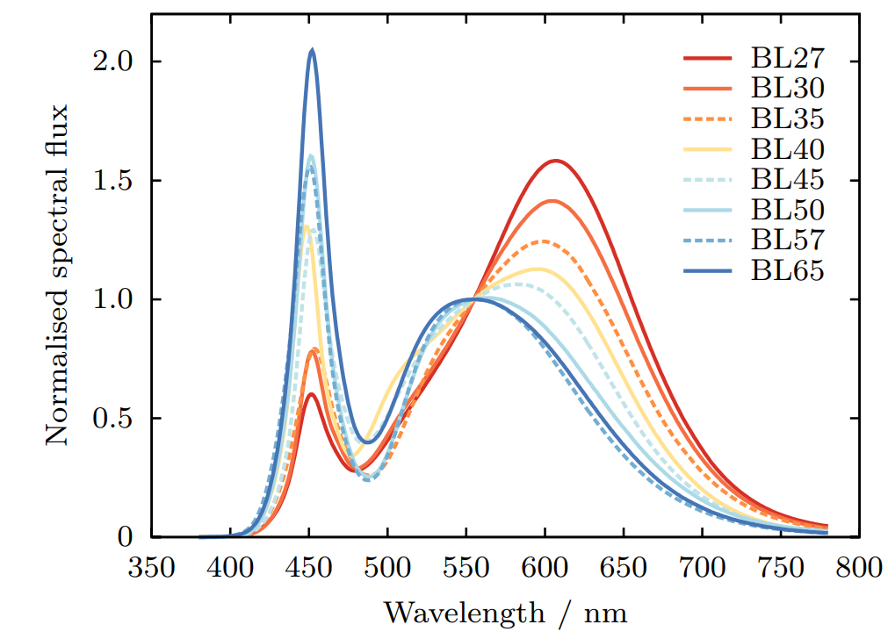
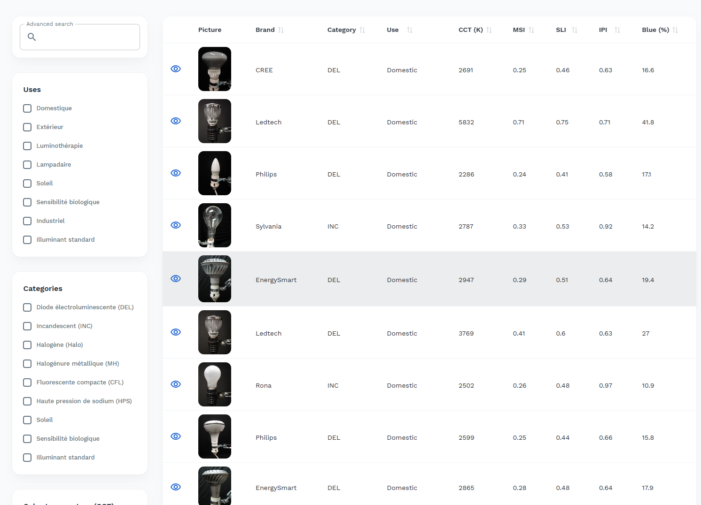
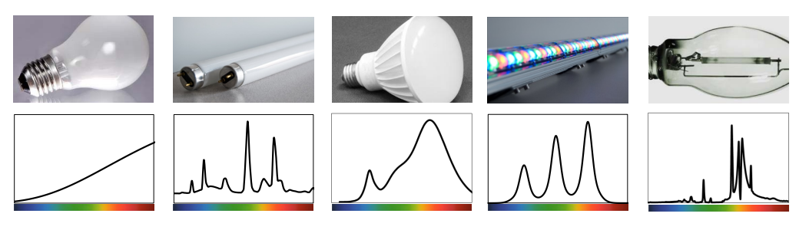
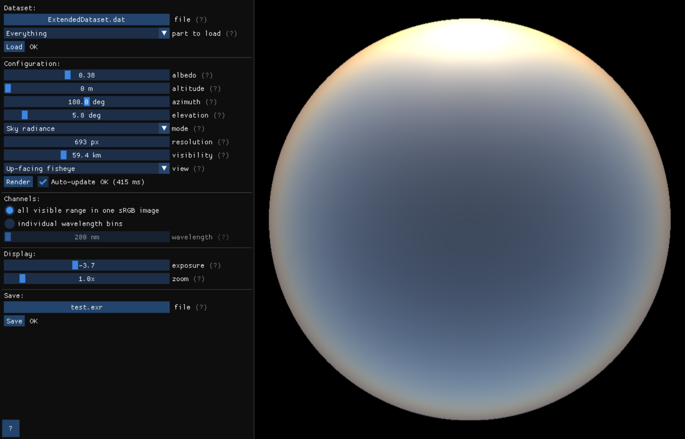

Spectral Light Sources
This page contains all the measurements of illuminants I've collected during my research.
If you decide to use them for your work, do not forget to include the respective citations.
To cite the datasets as provided by me, please also include the following citation: lt_illum_datasets.bib.
In case you know of a dataset that could extend this list, or in case you find an error in the data,
please contact me.
Sampling
Every dataset is a simple .txt file that contains the numerical values of the samples.
Each line corresponds to one light source measurement, with comma-separated samples starting at 380nm with 1nm increments.
To read the measurements from a file to a single list, the following Python script can be used.
Note that the data is not in the typical .csv that everyone is used to. This is because it was designed to be compatible with the program that I was using for my previous research.
Consequently, every provided measurement is also sampled with the same starting wavelength and the same increment, despite the original datasets sometimes providing different sampling rates.
Datasets

CIE
Standard reference illuminants defined by the CIE.
No actual measurements performed.

Kider et al.
Outdoor illumination spectra measured during daylight.
Precise measurements, little variability.

Kokka et al.
An extensive set of LED light bulb measurements.
CIE LEDs are derived from this dataset.

LSPDD
A collection of light source measurements spanning all the indoor categories.
High variability.

Royer
A collection of light source measurements spanning all the indoor categories.
High variability, but vast majority is LED.

PragueSkyModel
Spectral measurements acquired for computer vision and illumination estimation experiments.
1728 spectra, OutdoorData
| Name ↕ | Dataset ↕ | Category ↕ | File ↕ | Citation |
|---|